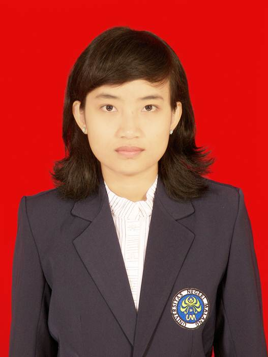

Curiculum Vitae
I. IDENTITAS DIRI 
| Nama Lengkap | : Yanuar Setyoningsih |  |
| Tempat, Tanggal Lahir | : Bangkalan, 26 Januari 1993 | |
| Tinggi, berat badan | : 158 cm, 47 kg | |
| Jenis kelamin | : Perempuan | |
| Status Perkawinan | : Belum menikah | |
| Agama | : Islam | |
| : amorrayuna@yahoo.com | ||
| No. telp | : 08976805793 | |
| Alamat lengkap | : Bumiasri sengkaling J-15 tahap II Junrejo - Batu | |
| Pendidikan terakhir | : SMK - Rekayasa Perangkat Lunak | |
| Status Pendidikan | : Mahasiswa Universitas Negeri Malang - S1 Pendidikan Teknik Informatika 2011 | |
II. RIWAYAT PENDIDIKAN
Pendidikan Formal
Asal Sekolah |
Tahun |
| SDN Mulyoagung 3 | 1999 - 2005 |
| SMP Negeri 3 Batu | 2005 - 2008 |
| SMK PGRI 3 Malang | 2008 - 2011 |
| Universitas Negeri Malang - Fakultas Teknik | 2011 - sekarang |
Pendidikan Non-Formal
Nama Instansi |
Tahun |
| VVIP - English Course | 2002 - 2005 |
| Magang - Meruvian Foundation | 2009 - 2010 |